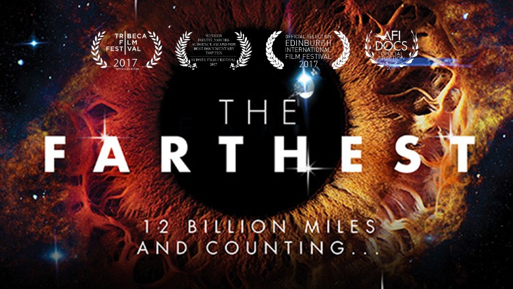

← Back to Home
The Farthest
The Farthest is a documentary that chronicles the incredible journey of the Voyager spacecraft, which traveled farther than any human-made object in history. The film features interviews with the scientists and engineers who worked on the project, as well as stunning visuals of the planets and moons explored by Voyager.